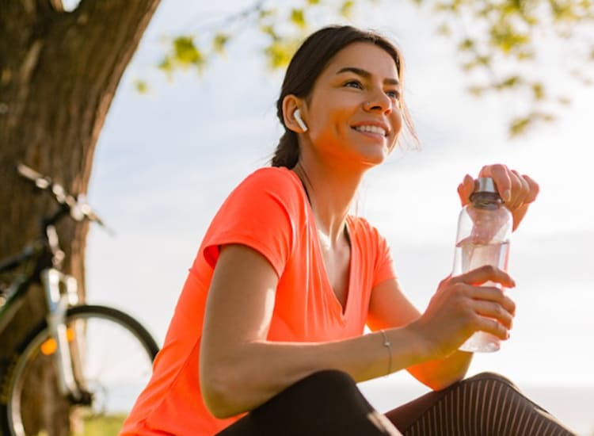
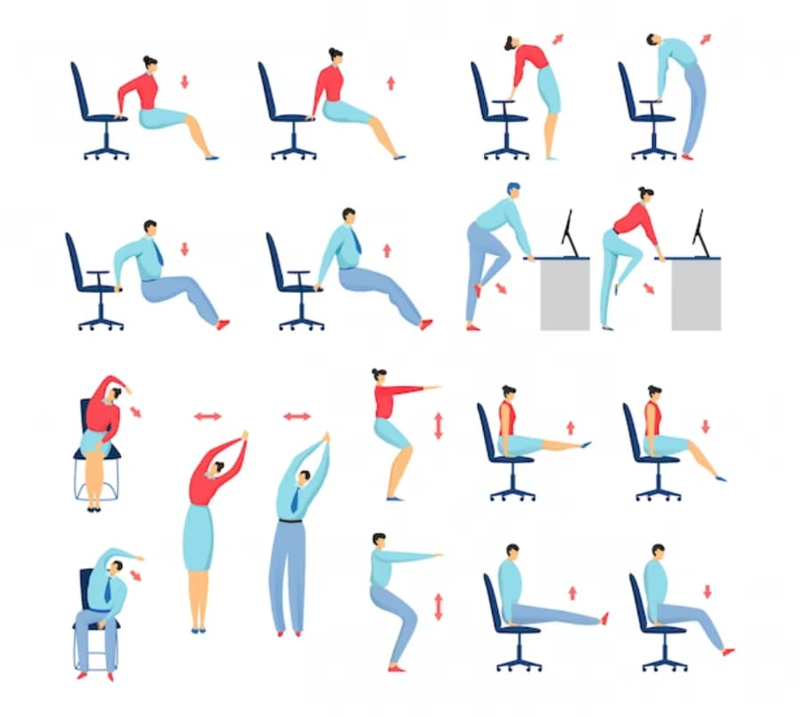
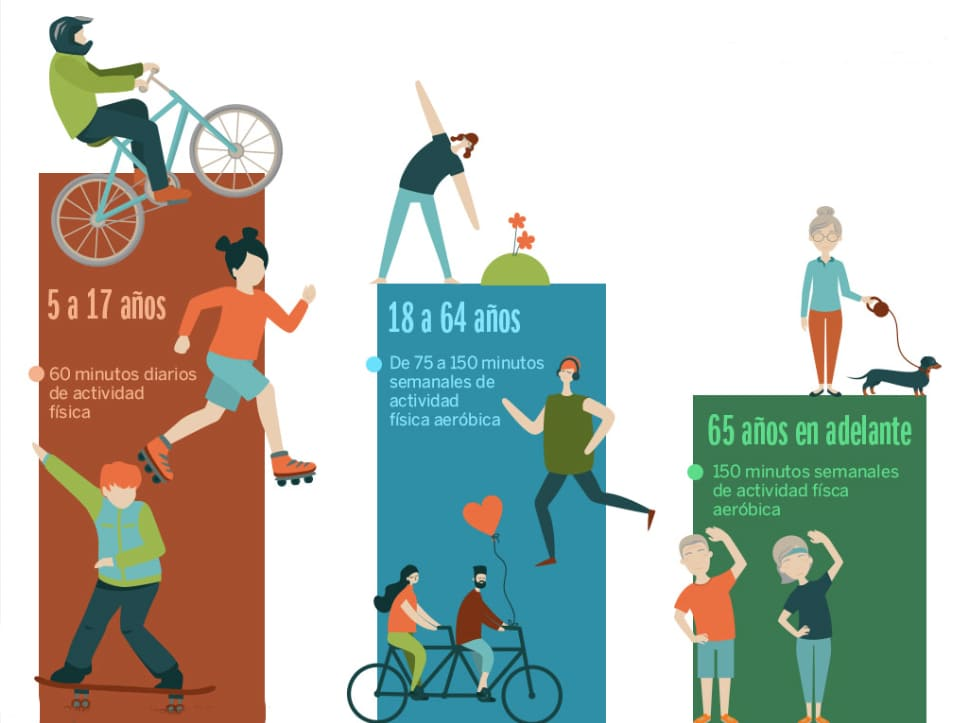
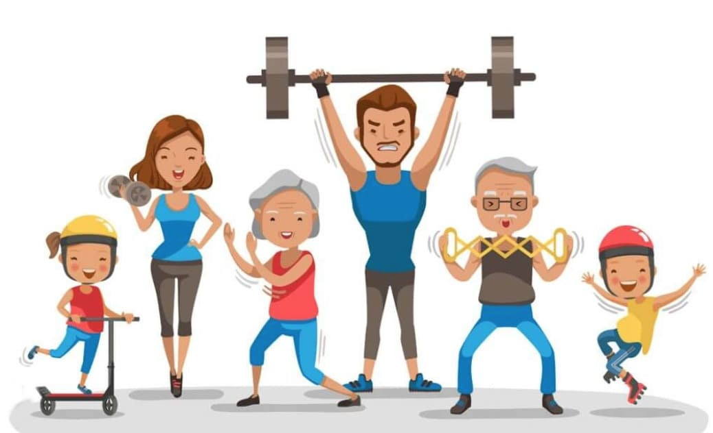

Realizar ejercicio ayuda a redudir el estres y mantiene fuertes tus habilidades
para pensar y aprender.
La importancia de realizar actividad fisica. Considerando que la serotonina es un neurotransmisor que
utiliza el cuerpo para enviar mensajes entre las células nerviosas, influyendo en el estado de ánimo, las
emociones, el apetito y la digestión; y que la noradrenalina es una hormona producida por las glándulas
suprarrenales y liberada en el torrente sanguíneo para transmitir señales nerviosas que ayudan a regular las
funciones cerebrales como el humor, concentración, atención y memoria, la especialista destacó que “por
medio del ejercicio físico, la serotonina aumenta su latencia o el tiempo que está en el cerebro, con lo
cual se asimila de mejor manera. También se regula la secreción de noradrenalina, así aumenta la sensación
de calma en el organismo”.



